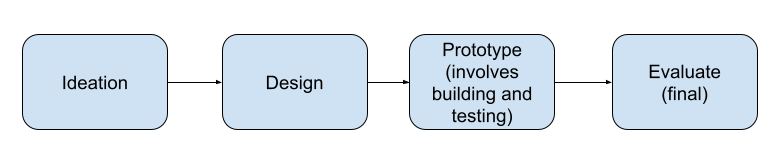

Who are you? You are a designer, researcher, engineer or student planning
to build or building an assistive technology targeted towards people with disabilities.
You want to create the best possible outcome for your technology such that it doesn’t
pose any harm to the intended users of your product. You will use this framework to
identify any potential harm that your product might pose.
How to use? There are six considerations that you need to consider when you are building
the assistive technology: problem definition, solution definition, cost, usage, rhetoric,
creation process and impact of technology. Under each of these considerations, there is a
series of questions that you answer to the best of your ability to help you interrogate
these considerations. You can answer these questions based on what you have already completed
in your design process or what you plan to do. It is better to answer these questions as early
as possible in the creation process to make it easier to reframe your work, if needed.
Based on your answers to the questions in the framework, consider the guidelines.
Framework
Note the intended users are the people who this assistive technology is meant to or can serve. We don’t use the general term person with disability to describe the user - even though it adds a more 'human' element to describe the audience - to the type of people who assistive technology is made for, because it is too general. For example, there needs to be a distinction between a ‘person with a disability’ being involved in the design process of the technology vs a person with the specific disability that the technology is meant to target.
Considerations
Problem Definition
- What is the ‘problem’ that the technology aims to solve?
- Has the ‘problem’ been defined by the intended users?
- If so, what evidence can be provided to support this claim? For example:
- Personal experience i.e. you are a possible intended user for this technology
- Initial focus groups or interviews with intended users
- Academic papers published by the intended users or involved initial focus groups with intended users
- Non-academic sources (blog posts, social media, etc) published by the intended users
- If not, who defined the ‘problem’? For example:
- You i.e. you are not a part of the possible intended users
- Academic papers not published by the intended users or didn’t involve initial focus groups with intended users
- Non-academic sources (blog posts, social media, etc) not published by the intended users
Solution Definition
- How does the technology solve the ‘problem’?
- Does the solution the technology offers expect the intended user to conform to normative standards? In other words, does the technology expect the intended users to change something about themselves because it is a norm society expects them to conform to?
- Are there other ways the ‘problem’ could be solved without the introduction of a new technology?
Cost of Technology
- How often does this technology need to be purchased and are there other parts that need to be purchased regularly? For example:
- One time purchase for everything
- One time purchase for main component, and weekly/monthly/annual purchases for smaller components
- Weekly/Monthly/Annual purchases for everything
- How much does this technology cost for someone to purchase it initially without any insurance or other assistance?
- What is the cost per month/year to purchase this technology in its entirety?
- For each common insurance company, what is the level of coverage that this technology has and how much would the intended user pay?
- With this coverage, what is the cost per month/year to purchase this technology in its entirety?
- Are there other avenues that this technology can be purchased without insurance at a reduced price or for free?
- With this assistance, what is the cost per month/year to purchase this technology in its entirety?
Usage of Technology
- In what ways will the intended users be helped to learn how to use the technology? For example:
- Instructional videos/pamphlets
- Sessions with a professional
- Have any studies been conducted to test whether the intended users can easily learn how to use the technology?
- Are there any affordances that the technology offers that makes it easy to use? For example, it is a technology that is similar to a technology that is part of the intended user's life.
Rhetoric of Technology
For rhetoric, the texts that should be analyzed are as follows: For research papers look at the wording in the paper and other supporting material published by the creators. For products, look at the promotional material and other materials published by the creators. Finally, for both projects also look at the informal messaging you use during the creation process (e.g. emails, meetings, etc.)
- Does the messaging around the technology focus on the innovation of the technology rather than the benefits for the intended user?
- Does the messaging around the technology involve bad terminology? (Answer with reference to UN list of bad terminology)
Creation Process of Technology
- For each stage below, highlight the level of involvement of the intended users at each stage 
- Disability-led (at least 1 person with disabilities is in charge and has agency and power)
- Participatory, Co-design, and/or Disability-centered (at least 1 person with disabilities is treated as an equal to other decision-makers and considered a "subject matter expert" in matters related to their disability)
- "Inclusive" (person with disabilities are present in some way, but their role isn't explicitly equal in power with decision-makers)
- Participant/user (typically brought in to evaluate as part of a study or test but don't have active power or agency to make decisions)
- Not involved at all
The following are the different possible levels of involvement:
Impact of Technology
- What are the next steps that you plan on taking to further develop this technology?
- Who will carry out these next steps to further develop this technology?
- Who will finance and sustain the production of this technology in the future?